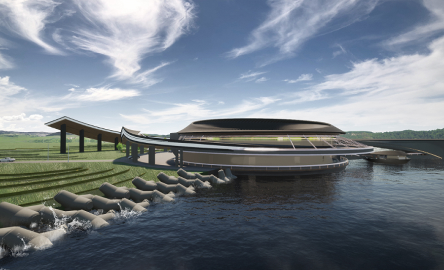

Marrine Funeral Design
해양장 시설 디자인
기여도 : 4인 팀 프로젝트 (기여도 50%)
제작 기간 : 6개월
툴 : Rhino, Keyshot, Photoshop, illustrator

Project Vision
주제인 ‘소거’에 맞춰 죽음이라는 삶의 소거의 장소인 장례식장을 디자인하고 죽음에 대한 부정적인 인식을 개선하고자 하였습니다.
- 01 팀의 리더로서, 팀을 이끌고 디자인 기획과 발표를 담당
- 02 늘어나는 사망자로 인한 토지부족과 환경오염을 해결
- 03 장례절차 '3일차'에 해당하는 서비스부터 제공
- #공간 재구성
- #원과 기와
- #토지부족
- #소거
- #환경오염
- #인식 개선